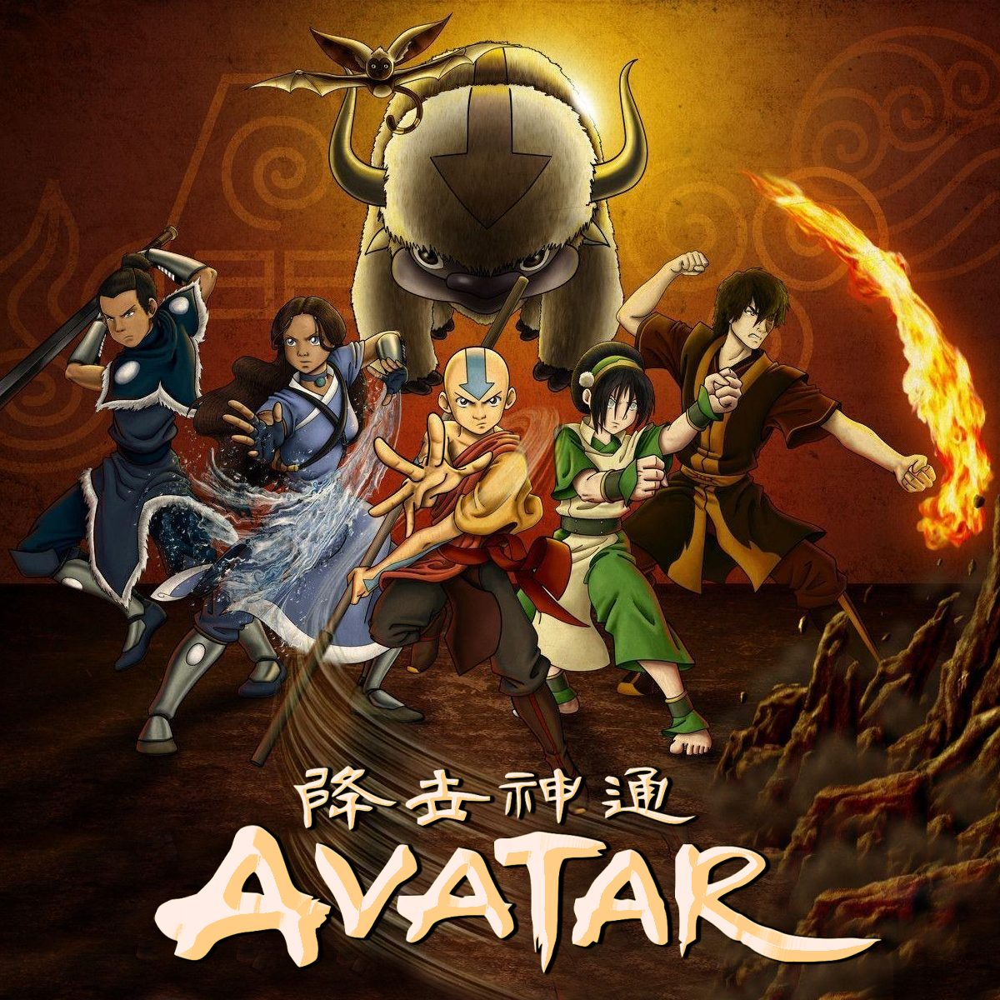
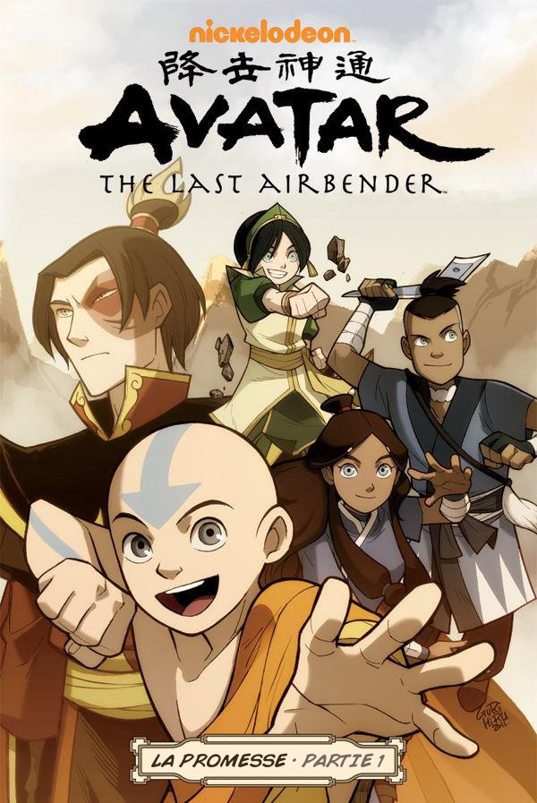
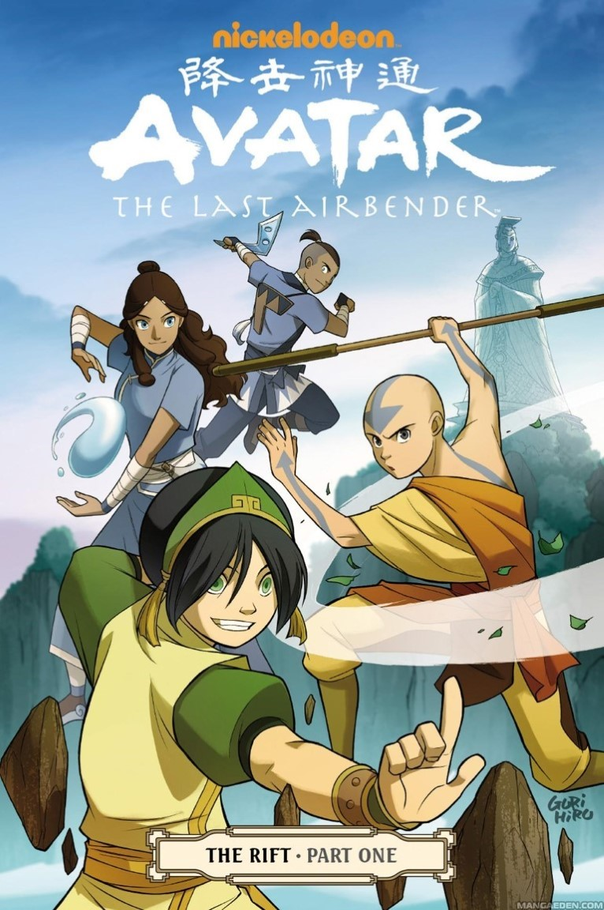

💖 Avatar : Le dernier maître de l’air
Dernièrement, j’ai regardé la série animée Avatar : Le dernier maître de l’air.
Résumé de la série
L’eau.
La terre.
Le feu.
L’air.
Il y a très longtemps, ces quatre peuples vivaient en harmonie. Mais un jour la nation du feu décida de passer à l’attaque.
Seul l’Avatar, maître de ces quatre éléments, pouvait mettre fin à la guerre. Mais juste au moment où on avait besoin de lui, il disparut.
Cent ans plus tard, mon frère et moi avons découvert le nouvel Avatar, un fils de l’air appelé Aang. Et même si sa maîtrise de l’air est exceptionnelle, il a encore beaucoup à apprendre avant de pouvoir sauver qui que ce soit. Mais je suis certaine que Aang peut sauver le monde.
En plus d’être magnifique graphiquement, cette série présente une histoire prenante, rafraîchissante et enrichissante avec des personnages amusants, profonds et extrêmement touchants.
J’ai parfois regretté le manque de détails concernant certains passages ou personnages, mais dans l’ensemble j’ai adoré le développement de plus en plus intense de l’intrigue et des enjeux. La série m’a même paru trop courte !
Il existe fort heureusement une suite sous forme de bandes dessinées.
Les bandes dessinées
Il y a deux recueils de petites histoires qui s’intègrent directement au récit principal de la série, dans les 3 livres que sont L’eau, La terre et Le feu. Ces anecdotes sont amusantes et sympathiques.
S’y ajoutent 6 histoires principales de 3 tomes chacune qui font directement suite aux événements de la série.
1. La promesse
Résumé
L’Avatar vient de mettre fin à la guerre de cent ans en supprimant la maîtrise du Seigneur du feu Ozaï.
Le nouveau dirigeant de la nation du feu, Zuko, le fils d’Ozaï, promet aux différents peuples du monde de restaurer la paix, avec l’aide de l’Avatar.
Au fur et à mesure de l’avancement de cette restauration, les deux amis adoptent des points de vue différents. Zuko finit par ne plus vouloir renvoyer les colons de la nation du feu chez eux, comme il était convenu pour rendre le royaume de la terre à son peuple. Il a ses raisons et est convaincu de bien faire. Seulement, il va à l’encontre du traité de paix établit avec le Roi de la Terre. Une nouvelle guerre menace.
Aang pense, en tant qu’Avatar, que la seule façon de rétablir l’équilibre entre les nations est que chacune d’elle occupe son propre territoire. Il se voit alors contraint de tenir sa promesse envers Zuko, à savoir de le tuer s’il devenait comme son père et menaçait la paix.
Mon avis
Cette histoire est excellente !
Comme pour la série animée, le dessin est magnifique, soigné et très esthétique.
Les personnages sont toujours fidèles à eux-mêmes. Ils sont confrontés à leur morale et réfléchissent durement à l’élaboration d’un monde meilleur. Ils doivent choisir entre l’amitié et le bien de tous. Le dilemme est ardu. Cette façon d’aborder les choses donne à réfléchir.
2. La recherche
Résumé
Zuko aimerait retrouver sa mère, mais il ne parvient pas à obtenir les aveux de son père concernant son exil. Il est obligé de demander l’aide de sa sœur, Azula, instable psychologiquement. Celle-ci parvient à obtenir des informations et à retrouver le village d’enfance de sa mère.
Pour pouvoir maîtriser Azula durant le voyage, Zuko demande à ses amis Aang, Katara et Sokka de les accompagner.
Mon avis
Encore une fois, tout y est. Beauté, sagesse, réflexion, etc.
Zuko est troublé par la relation qu’entretiennent Katara et Sokka, frère et sœur, alors que lui-même est perpétuellement en conflit avec Azula. Cette dernière profite bien évidemment de sa gentillesse et de son empathie pour lui jouer de sales tours.
La confrontation du passé et du présent nous fait comprendre que Zuko n’a pas été le seul de la famille à être maltraité par Ozaï. Sa mère a beaucoup souffert, mais heureusement le dénouement est plutôt réjouissant.
3. Le désaccord
Résumé
Le monde a beaucoup changé depuis la fin de la guerre. Alors que chaque nation se développe, Aang essaie de faire revivre les traditions de son peuple disparu. Accompagné de ses amis et nouveaux acolytes désireux d’en apprendre plus sur les nomades de l’air, il se rend sur une île où les moines avaient l’habitude de célébrer une fête dédiée au précédent Avatar de l’air.
En arrivant sur place, Aang est choqué de constater que cet endroit magnifique et sauvage est désormais dénaturé par une usine et une ville polluantes. Il trouve cela déplorable, d’autant plus que l’appât du gain des habitants les incite à faire toujours plus de dégâts, réveillant ainsi un esprit puissant chargé de protéger les lieux.
Aang doit s’efforcer de comprendre cet esprit, de se rappeler les traditions de son peuple, de rétablir le lien avec les anciens Avatars et de protéger les habitants tout en essayant de préserver son amitié avec Toph qui approuve le développement industriel de l’île et dénigre les traditions des moines.
Mon avis
J’ai moins apprécié cette histoire. Les conflits intérieurs des personnages sont toujours présents, mais tout devient moins beau. Comme Aang, je n’aime pas voir les usines et les villes accaparer toutes les cases de la BD.
4. Fumée et ombre
Résumé
Aang et ses amis sont chargés d’enquêter sur l’enlèvement de plusieurs enfants de la nation du feu. Le petit frère de Mai, l’ancienne petite amie de Zuko, a aussi disparu. Mai identifie rapidement les agresseurs comme étant d’anciens esprits de fumée dont ses parents lui parlaient quand elle était petite pour lui faire peur. Il s’avère finalement qu’une manigance politique – et plus personnelle aussi – se cache derrière tout cela.
Mon avis
J’ai aimé retrouver la tension amoureuse entre les personnages, qui avait disparu depuis que tout le monde était bien heureux. Zuko est décidément mon personnage préféré.
L’histoire en revanche est un peu plus bancale et moins intéressante. Les objectifs d’Azula sont obscurs, voire incompréhensibles. Elle paraissait pourtant moins folle dans les dernières BD.
5. Nord et Sud
Résumé
De retour dans leur village de la tribu de l’eau du Pôle Sud, Katara et Sokka sont surpris par l’essor considérable de la ville qui ressemble désormais à la grande cité de la tribu de l’eau du Pôle Nord.
Ils découvrent rapidement qu’un conflit oppose certains conservateurs à la nouvelle politique de développement menée par le père des deux héros. Des quiproquos et des non-dits menacent l’équilibre et mettent les habitants en danger.
Mon avis
Cette histoire-ci ne nourrit plus vraiment le développement des personnages et le récit principal. Je pense qu’elle est surtout là pour montrer à quel point le monde change rapidement et que, malgré tous leurs efforts, les héros ne sont pas parvenus à ramener la paix dans le cœur de tout le monde.
Globalement, je n’ai pas trop apprécié cette histoire.
6. Déséquilibre
Résumé
Associée à son père dans la gestion de la raffinerie de la terre et du feu, Toph, accompagnée du « gaang » presque au complet, réalise que des conflits entre maîtres et non maîtres ont éclaté et menacent le développement de son usine, et la vie des habitants.
La ségrégation s’est insinuée dans la ville et un coup d’État se prépare pour rendre la domination des maîtres possible.
Mon avis
Cette BD-ci n’est pas superbe. Les dessins ne sont plus du même acabit, la répétition des conflits est lassante et les nouveaux personnages sont creux. La psychologie manque de finesse pour l’antagoniste principal. Faire subir aux autres ce que l’on m’a fait subir alors que j’ai détesté cela… Humm… On peut mieux faire.
Globalement, le message à retenir est que le temps que les gens garderont les stigmates de la guerre qui les a oppressés pendant cent ans, l’Avatar aura toujours du travail pour rétablir la paix.
Conclusion
J’ai adoré poursuivre les aventures de Aang et de ses amis. Toutes les histoires n’étaient pas exceptionnelles, mais elles amènent toutes à la suite de la série. En effet, comme on s’y attendait, l’Avatar n’a pas fini de se réincarner.
La légende de Korra – série animée en 4 saisons – se déroule environ 70 ans après que Aang a mis fin à la guerre. Une maîtresse de l’eau, nouvel Avatar, poursuit la quête de la paix et de l’équilibre entre les peuples.
Je ne l’ai pas encore visionnée, mais cela ne saurait tarder !